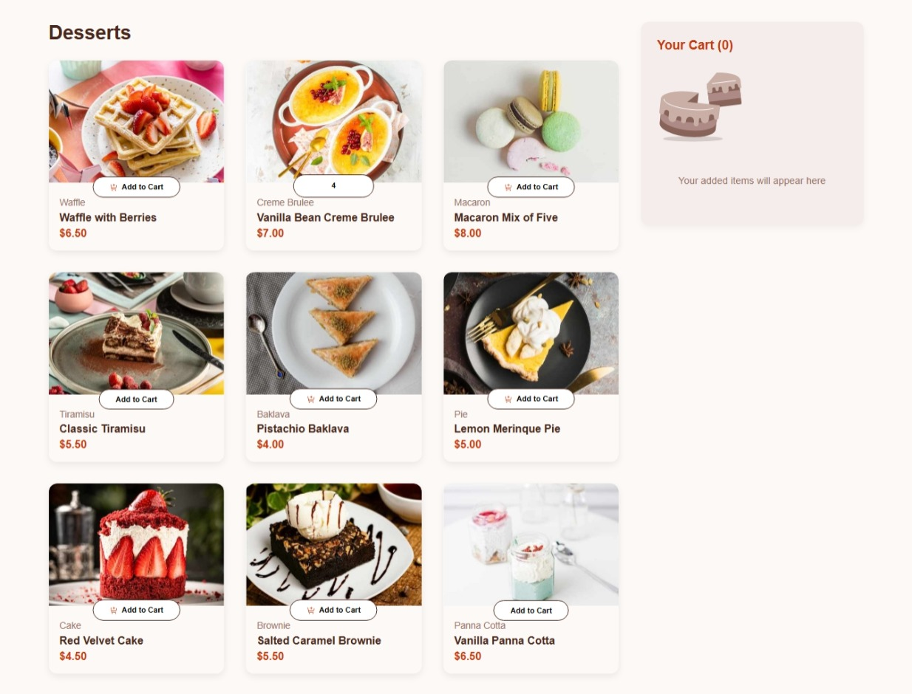
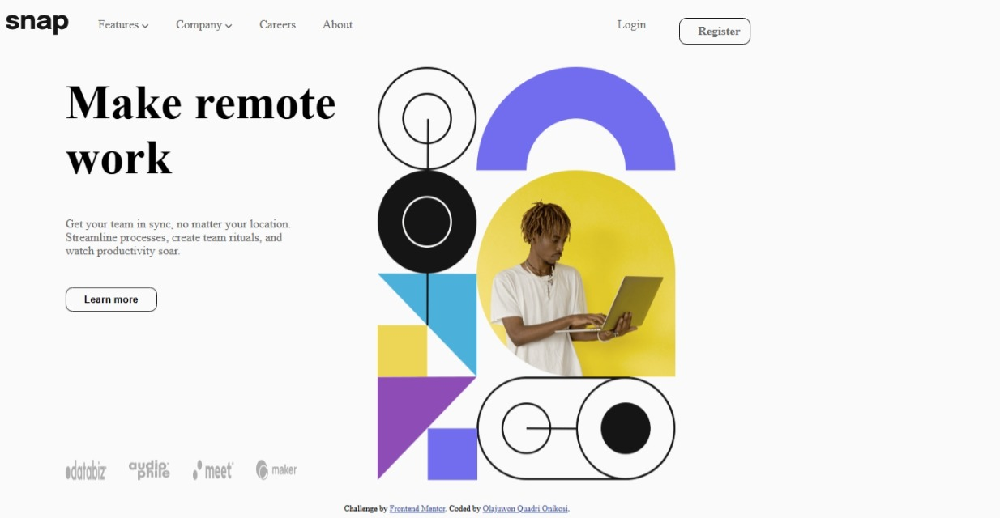
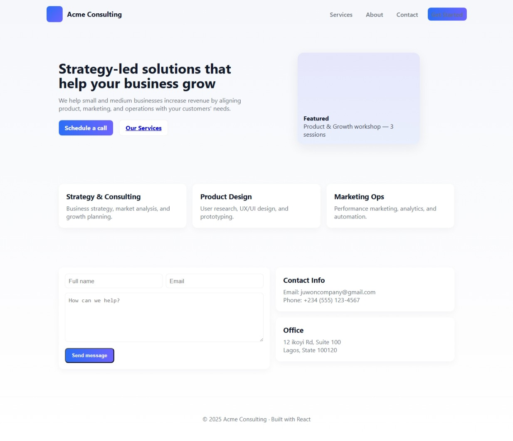

Projects

Social Proof Section
Built a social proof section with testimonials with HTML and CSS.
Live Site |
GitHub Repo

CodeNetwork
Built an learning page for series of programming language with HTML, CSS, BootStrap and JavaScript.
Live Site |
GitHub Repo

Product Cart List
Responsive product cart list built with HTML, CSS and JavaScript.
Live Site |
GitHub Repo

Intro Section with Dropdown Navigation
A responsive landing page built as part of a Frontend Mentor challenge. The project features a dropdown navigation menu and a mobile-friendly hamburger menu with smooth slide-in animations. The layout adapts seamlessly from desktop to mobile, using semantic HTML, modern CSS, and vanilla JavaScript.
⚡ Features:
Responsive Design → Works on desktop, tablet, and mobile.
Dropdown Navigation → Interactive dropdowns for Features and Company.
Hamburger Menu → Slide-in mobile navigation with overlay and close button.
Accessible Interactions → aria-expanded attributes for better screen reader support.
Responsive Images → Hero image swaps automatically for desktop and mobile using .
🛠️ Tech Stack:
HTML5 for semantic structure.
CSS3 (Flexbox, media queries) for responsive styling.
JavaScript (ES6) for interactivity.
🎯 What I Learned:
How to implement dropdown menus with accessibility in mind.
Building a mobile-first navigation system with hamburger toggle.
Using the element for responsive images.
Structuring clean, reusable CSS with variables and media queries.
Live Site |
GitHub Repo

Acme Consulting
Responsive landing page for Acme Consulting built with HTML, CSS, and React.
Live Site |
GitHub Repo
About Me
My name is Olajuwon Quadri Onikosi, and I'm a 21-year-old aspiring Frontend Developer based in Lagos, Nigeria.
I specialize in creating responsive, user-friendly websites using HTML, CSS, Bootstrap, GitHub, and JavaScript,
and I'm currently expanding my skills by learning React.
I've always been passionate about technology — ever since I was young, I've dreamed of building websites and working
for major tech companies. I enjoy solving problems, thinking deeply about challenges, and finding practical solutions.
Beyond coding, I love learning new skills, exploring fresh ideas, and collaborating with ambitious people.
My goal is to keep growing as a developer, contribute to impactful projects, and eventually build a career in top tech companies.
Key Skills
- HTML
- CSS
- Bootstrap
- JavaScript
- Git and GitHub
- Netlify
- React (currently learning)
- WordPress (currently learning)
- Responsive Web Design
- Cross-Browser Compatibility
- Version Control
- Problem-Solving
- Attention to Detail
- Continuous Learning
- Collaboration
- Time Management